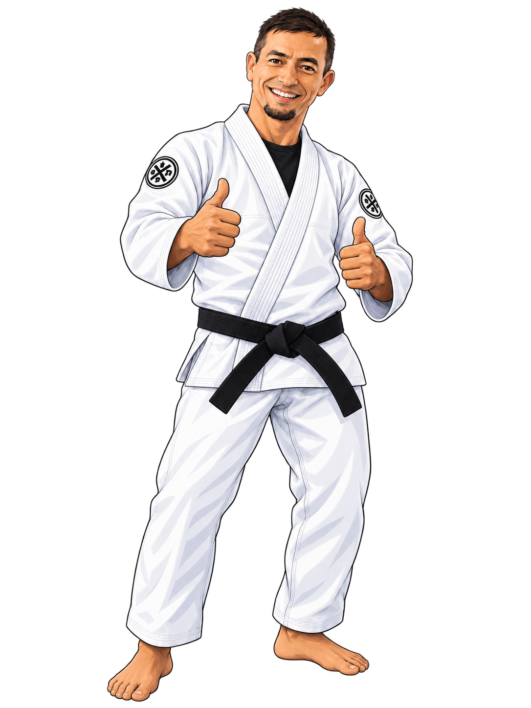
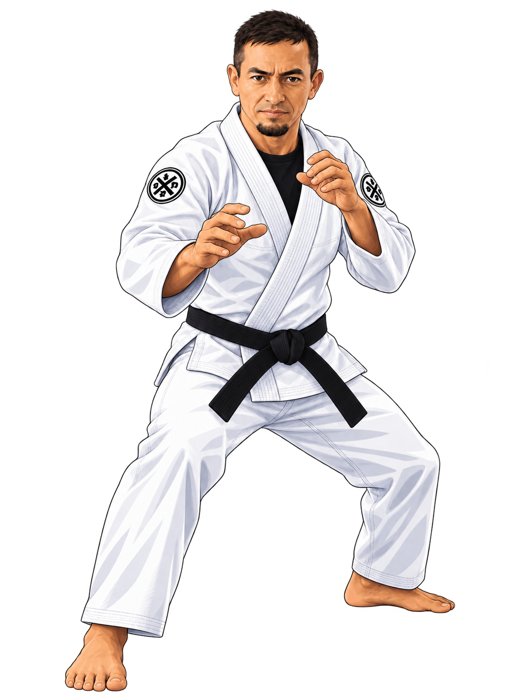
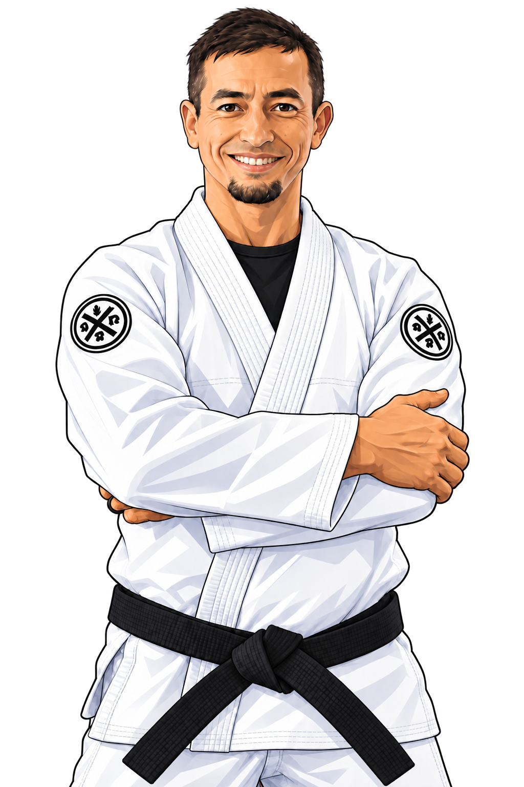
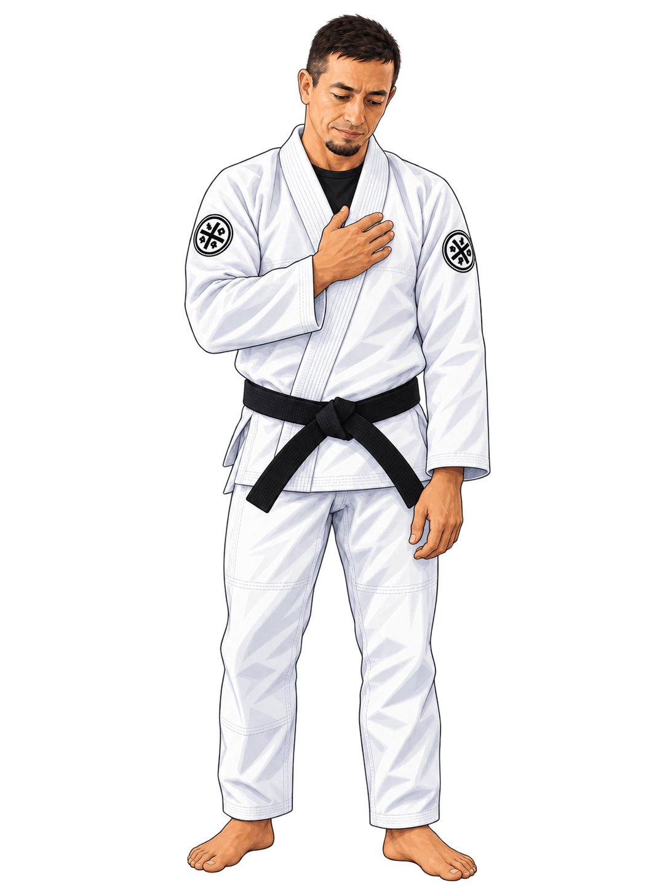
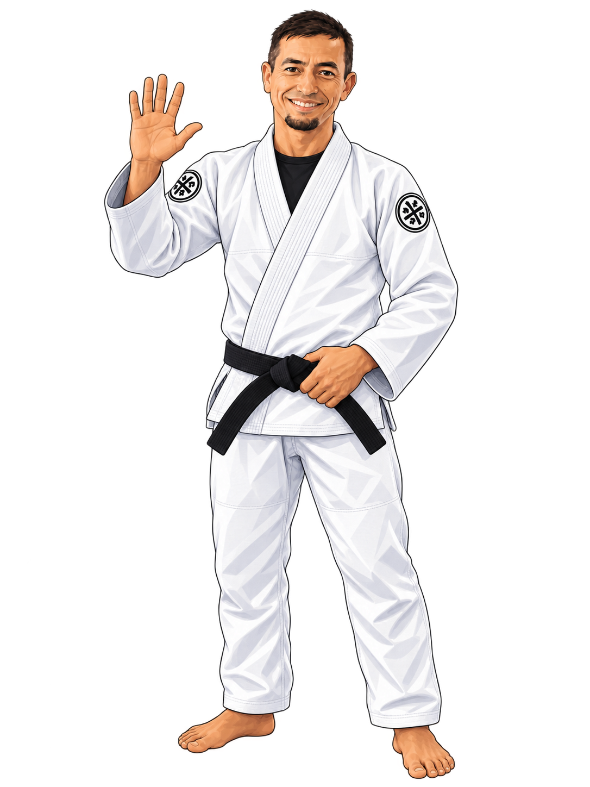

キッズ向け集客が一般クラスと同じSNS・WEB動線に混ざっている
CARPE DIEM OKINAWA / KIDS
ファミリー戦略
子どもを入口に
新しいファミリー層を開拓する

01 / NOW
今の課題
キッズ独自の魅力や世界観が見えにくい
「子どもの習い事」としての訴求が足りない

02 / APPROACH
別ルートをつくる
習い事を探しているファミリー層へ、キッズ専用の入口をつくる。
03 / TARGET
子どもと保護者
それぞれの目線で考える
「ここに通いたい」
- 楽しそう
- カッコいい
- やってみたい
「ここで習わせたい」
- 安心できる
- 成長につながる
- 通いやすい

CARPE DIEM OKINAWA KIDS
キッズクラスを
「子どもの習い事」として
分かりやすく見せる
キッズ中心の世界観
キャラクター
実際のクラス風景
成長や挑戦
4歳から
安全・安心
料金・スケジュール
JP / EN
03.5 / KIDS SNS
エメルソンさんを
キッズの案内役にする
先生としての安心感は残しつつ、子どもが親しみを持てるキャラクターとして登場。投稿ごとに表情と役割を変えて、キッズクラスの世界観をつくる。


CARPE DIEM OKINAWA KIDS
考えるから、おもしろい動くから、強くなるクラスの一瞬 ＋ エメルソンさんの一言
クラス風景で
「楽しそう」を伝える
キャラクターの一言で
「やってみたい」を作る
LP・無料体験へ
迷わずつなげる
04 / FLOW
見るから、やってみるへ
無料体験子ども「また行きたい」
保護者「習わせたい」
↓保護者「習わせたい」
入会子ども自身の「やりたい」から始まる
↓ファミリー割引親・兄弟への派生入会
家族で通う理由
退会・離脱の抑制
家族で通う理由
退会・離脱の抑制
05 / GOAL
新規開拓 × 派生入会 × 離脱抑制
- 習い事市場から新しいファミリー層を獲得
- 子ども自身の「やりたい」から入会へ
- 親・兄弟への派生入会をつくる
- 家族単位の接点を増やし、継続につなげる